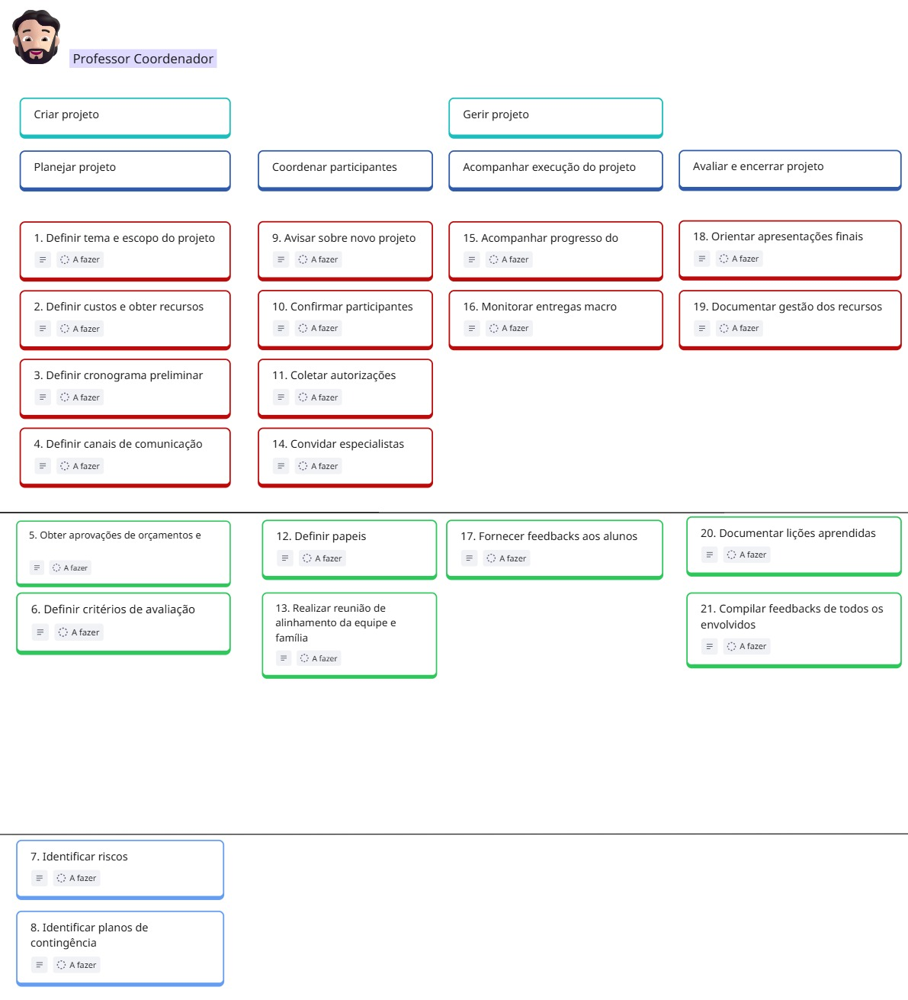
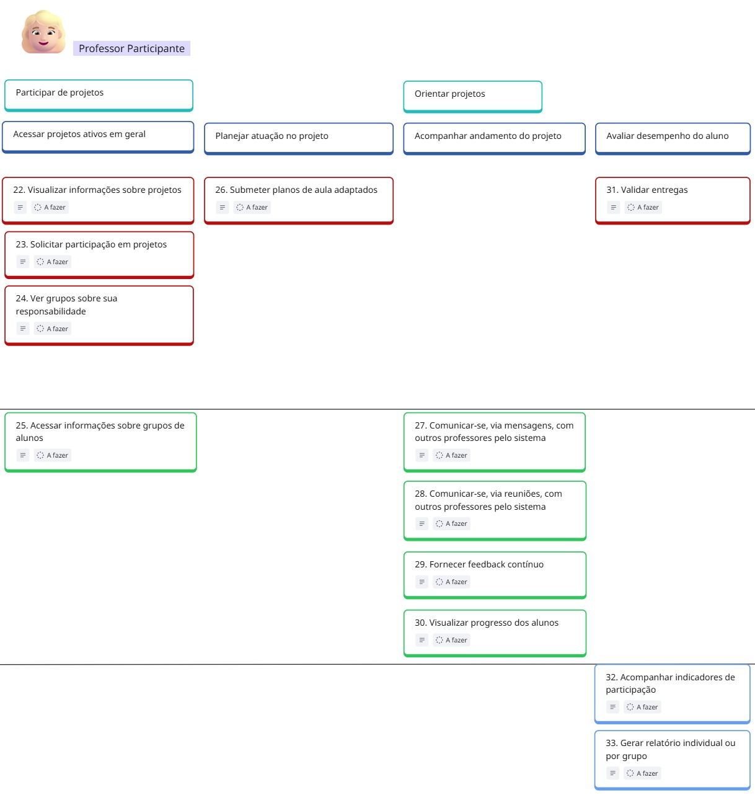
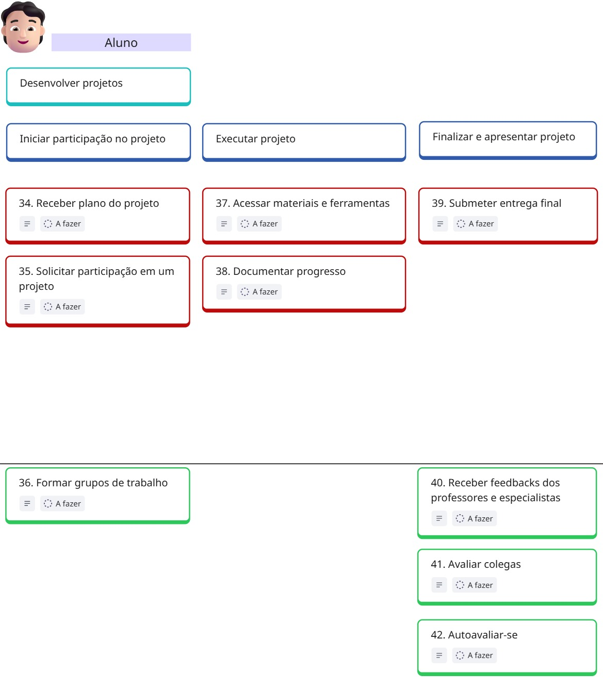
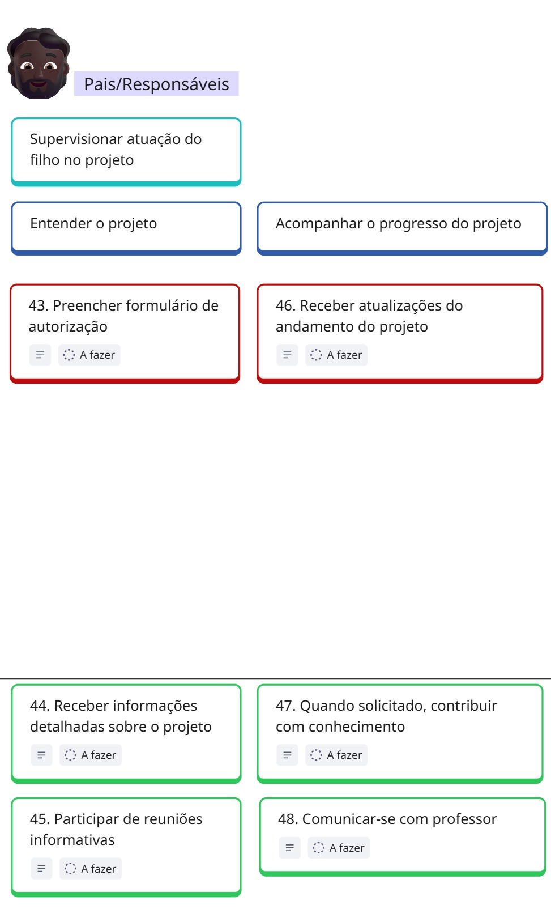
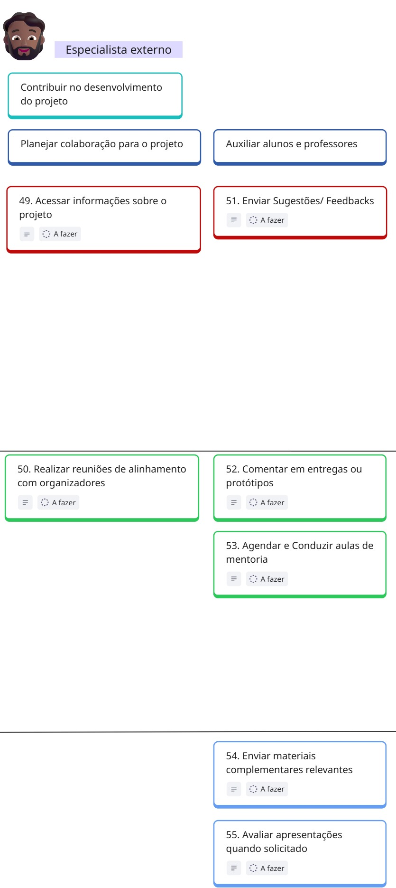
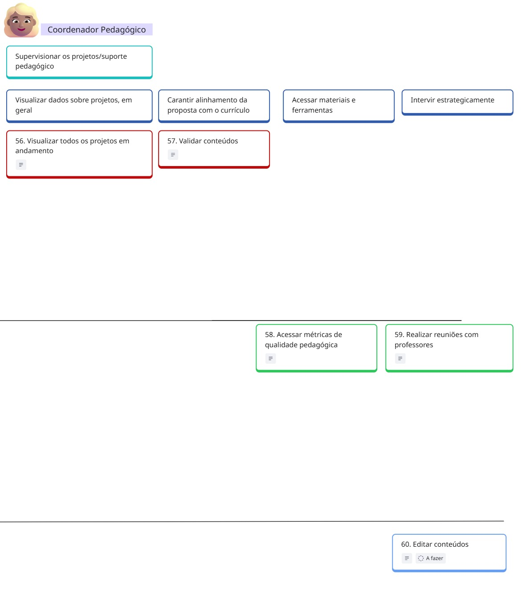

User Story Mapping
Empresa EduConnect
Quadro do USM
Personas do EduConnect
| Persona | Papel no projeto | Necessidades/Expectativas |
|---|---|---|
| Professor Coordenador | Planeja e gerencia os projetos. | Precisa de controle geral e visão estratégica. |
| Professor Participante | Contribui com sua área no projeto. | Precisa de acesso às informações e boa comunicação. |
| Aluno | Participa ativamente dos projetos. | Busca uma plataforma intuitiva e interativa. |
| Pais/Responsáveis | Acompanham o progresso dos filhos. | Precisam de informações claras e atualizações regulares. |
| Especialista Externo | Colabora com conhecimento prático. | Precisa de orientações claras e integração com a equipe. |
| Coordenador Pedagógico | Garante o alinhamento pedagógico. | Precisa de visão global e dados para avaliar resultados. |
Professor Coodenador

| Requisito Funcional | User Story | Priorização | MVP |
|---|---|---|---|
| RF01 - Definir tema e escopo do projeto | US01 - Como Professor coordenador, quero poder definir tema e escopo do projeto, para que eu tenha clareza e foco durante a execução do projeto. | 5.33 | X |
| RF02 - Definir custos e obter recursos | US02 - Como professor coordenador, quero poder definir custos e obter recursos para o projeto, para que eu possa gerenciar o orçamento e garantir o financiamento necessário para a execução do projeto. | 5.20 | X |
| RF03 - Definir cronograma preliminar | US03 - Como professor coordenador quero poder definir o cronograma preliminar para o projeto, para que eu possa organizar as etapas e garantir o cumprimento dos prazos. | 5.00 | X |
| RF04 - Definir canais de comunicação | US04 - Como professor coordenador quero poder definir os canais de comunicação que serão utilizados no projeto, pela plataforma, para que a comunicação entre os envolvidos seja eficiente e organizada. | 5.33 | X |
| RF05 - Obter aprovações de orçamentos e recursos | US05 - Como professor coordenador quero poder obter aprovações de orçamentos e recursos para o projeto, para garantir o financiamento necessário e assegurar a execução adequada do projeto. | 1.25 | |
| RF06 - Definir critérios de avaliação | US06 - Como professor coordenador, quero definir critérios de avaliação para o projeto, para garantir uma avaliação clara e justa. | 2.00 | |
| RF07 - Identificar riscos | US07 - Como professor coordenador, quero identificar os riscos do projeto, para que eu possa antecipar problemas e planejar ações de mitigação. | 0.75 | |
| RF08 - Identificar planos de contingência | US08 - Como professor coordenador, quero identificar planos de contingência para o projeto, para que possamos estar preparados para enfrentar imprevistos e garantir a continuidade das atividades. | 0.75 | |
| RF09 - Avisar sobre novo projeto | US09 - Como professor coordenador, quero avisar sobre novos projetos, para que outros participantes possam ser informados e solicitar participação. | 5.33 | X |
| RF10 - Confirmar participantes | US10 - Como professor coordenador, quero confirmar os participantes do projeto, para garantir que todos estejam devidamente registrados e possam contribuir nas atividades. | 5.20 | X |
| RF11 - Coletar autorizações | US11 - Como professor coordenador, quero coletar autorizações dos responsáveis dos alunos, para garantir que todos estejam formalmente aprovados para participar do projeto. | 5.33 | X |
| RF12 - Definir papéis | US12 - Como professor coordenador, quero definir os papéis dos participantes no projeto, para que as responsabilidades fiquem claras e o trabalho seja organizado. | 2.00 | |
| RF13 - Realizar reunião de alinhamento da equipe | US13 - Como professor coordenador, quero realizar reunião de alinhamento com a equipe e as famílias, para compartilhar informações, alinhar expectativas e fortalecer a parceria no desenvolvimento do projeto. | 1.25 | |
| RF14 - Convidar especialistas externos | US14 - Como professor coordenador, quero convidar especialistas externos para o projeto, para que possamos contar com conhecimentos especializados que enriqueçam e qualifiquem as atividades desenvolvidas. | 3.65 | X |
| RF15 - Acompanhar progresso do trabalho | US15 - Como professor coordenador, quero acompanhar o progresso do trabalho no projeto, para garantir que as atividades estejam sendo realizadas conforme o planejado e os prazos sejam cumpridos. | 5.33 | X |
| RF16 - Monitorar entregas macro (marcos do projeto) | US16 - Como professor coordenador, quero monitorar os marcos do projeto, para acompanhar os principais acontecimentos e garantir que as entregas importantes sejam realizadas no prazo. | 8.00 | X |
| RF17 - Fornecer feedbacks aos alunos | US17 - Como professor coordenador, quero fornecer feedbacks aos alunos, para que eles possam entender seu desempenho, identificar pontos de melhoria e se motivar no processo de aprendizagem. | 2.00 | |
| RF18 - Orientar apresentações finais | US18 - Como professor coordenador, quero orientar as apresentações finais do projeto, para garantir que os alunos estejam preparados e que os resultados sejam apresentados de forma clara e organizada. | 5.20 | X |
| RF19 - Documentar gestão dos recursos | US19 - Como professor coordenador, quero documentar a gestão dos recursos do projeto, para garantir transparência, controle financeiro e facilitar a prestação de contas. | 3.33 | X |
| RF20 - Documentar lições aprendidas | US20 - Como professor coordenador, quero documentar as lições aprendidas durante o projeto, para registrar conhecimentos adquiridos e melhorar projetos futuros. | 1.25 | |
| RF21 - Compilar feedbacks de todos os envolvidos | US21 - Como professor coordenador, quero compilar os feedbacks de todos os envolvidos no projeto, para obter uma visão completa sobre o desempenho, identificar pontos fortes e oportunidades de melhoria. | 1.25 |
Professor Participante

| Requisito Funcional | User Story | Priorização | MVP |
|---|---|---|---|
| RF22 - Visualizar informações sobre projetos | US22 - Eu, como professor participante, quero poder visualizar informações gerais sobre projetos, para compreender o seu contexto específico. | 5.00 | X |
| RF23 - Solicitar participação em projetos | US23 - Eu, como professor participante, quero poder solicitar participação em um projeto, para que eu possa auxiliar a adaptação dos conteúdos e acompanhar o progresso dos alunos. | 2.60 | X |
| RF24 - Ver grupos sobre sua responsabilidade | US24 - Eu, como professor participante, quero poder visualizar os grupos de alunos de um projeto que estão sob minha responsabilidade, para que eu possa direcionar adequadamente minhas contribuições ao projeto. | 2.60 | X |
| RF25 - Acessar informações sobre grupos | US25 - Eu, como professor participante, quero ser capaz de acessar informações específicas sobre o progresso do trabalho e as entregas de cada grupo cadastrado em um projeto. | 2.00 | |
| RF26 - Submeter planos de aula adaptados | US26 - Eu, como professor participante, quero poder submeter planos de aula adaptados para adequar os conteúdos de minha especialidade ao contexto do projeto. | 3.20 | X |
| RF27 - Comunicação via mensagens | US27 - Eu, como professor participante, quero ser capaz de me comunicar, via mensagens, com o professor coordenador e os outros professores participantes pelo sistema, para trocarmos assincronamente informações pertinentes ao projeto. | 2.00 | |
| RF28 - Comunicação via reuniões | US28 - Eu, como professor participante, quero ser capaz de me comunicar, via reuniões, com o professor coordenador e os outros professores participantes pelo sistema, para trocarmos sincronamente informações pertinentes ao projeto. | 2.00 | |
| RF29 - Fornecer feedback contínuo | US29 - Eu, como professor participante, quero poder fornecer feedback contínuo, via mensagens, aos alunos/grupos acerca de seu trabalho e entregas, para contribuir com suas. | 2.00 | |
| RF30 - Visualizar progresso dos alunos | US30 - Eu, como professor participante, quero visualizar o progresso do trabalho dos alunos, para que eu possa estar ciente acerca do andamento do projeto e da compreensão dos alunos sobre os conteúdos. | 2.00 | |
| RF31 - Validar entregas | US31 - Eu, como professor participante, quero validar as entregas dos grupos, com relação à minha especialidade, para confirmar sua adequação às exigências dos conteúdos. | 3.20 | X |
| RF32 - Acompanhar indicadores de participação | US32 - Eu, como professor participante, quero ser capaz de acompanhar os indicadores, estabelecidos pelo professor coordenador, de participação dos alunos no projeto, para que eu tenha ciência sobre a sua adesão à proposta. | 0.75 | |
| RF33 - Gerar relatório individual ou por grupo | US33 - Eu, como professor participante, quero poder obter relatórios individuais e de grupo os quais compilem todo desempenho na execução do trabalho e nas entregas dos alunos, para viabilizar a minha análise desses dados. | 0.75 |
Aluno

| Requisito Funcional | User Story | Priorização | MVP |
|---|---|---|---|
| RF34 - Receber plano do projeto | US34 - Eu, como aluno, quero receber o plano do projeto em que estou cadastrado para compreender o seu contexto específico e suas exigências. | 5.00 | X |
| RF35 - Solicitar participação em um projeto | US35 - Eu, como aluno, quero solicitar a participação em um projeto, para que eu possa iniciar a participação nesse projeto. | 3.33 | X |
| RF36 - Formar grupos de trabalho | US36 - Eu, como aluno, quero poder formar grupos de trabalho, para que esteja apto a iniciar a execução de um projeto. | 2.00 | |
| RF37 - Documentar progresso | US37 - Eu, como aluno, quero ser capaz de acessar materiais e ferramentas disponibilizadas pelos professores coordenador e participantes para a execução adequada do projeto. | 5.33 | X |
| RF38 - Submeter entrega final | US38 - Eu, como aluno, quero poder documentar o progresso de meus trabalhos para que eu seja acompanhado adequadamente pelos professores coordenador, participantes e meus responsáveis. | 3.33 | X |
| RF39 - Receber feedbacks dos professores | US39 - Eu, como aluno, quero poder submeter a entrega final de meu grupo, para que essa possa ser devidamente avaliada e validada pelos professores coordenador e participantes. | 5.20 | X |
| RF40 - Avaliar colegas | US40 - Eu, como aluno, quero ser capaz de receber feedbacks dos professores coordenador e participantes (especialistas) para que eu possa ter a ciência de quão adequados estão os meus trabalhos e entregas. | 3.33 | |
| RF41 - Autoavaliar-se | US41 - Eu, como aluno, quero, ao final de um projeto, avaliar os meus colegas de grupo quanto à sua contribuição aos trabalhos e entregas, para contribuir para uma avaliação geral justa de todos os integrantes do grupo. | 1.33 | |
| RF42 - Preencher formulário de autorização | US42 - Eu, como aluno, quero, ao final do projeto, poder avaliar o meu próprio desempenho em trabalhos e entregas, para que eu possa identificar pontos de melhoria em minha participação. | 1.33 |
Professor Coordenador

| Requisito Funcional | User Story | Priorização | MVP |
|---|---|---|---|
| RF43 - Receber informações detalhadas sobre o projeto | US43 - Eu, como pai/responsável, quero preencher o formulário de autorização, para que meu filho possa participar das atividades do projeto de forma regularizada e segura. | 5.30 | X |
| RF44 - Participar de reuniões informativas | US44 - Eu, como pai/responsável, quero receber informações detalhadas sobre o projeto, para que eu possa acompanhar de forma abrangente o envolvimento do meu filho. | 2.00 | |
| RF45 - Receber atualizações do andamento do projeto | US45 - Eu, como pai/responsável, quero participar de reuniões informativas, para que eu possa compreender o meu papel e como posso apoiar o desenvolvimento do projeto e do meu filho. | 2.00 | |
| RF46 - Quando solicitado, contribuir com conhecimento | US46 - Eu, como pai/responsável, quero receber atualizações do andamento do projeto, para que eu esteja sempre ciente do progresso e das possíveis necessidades do meu filho. | 3.33 | X |
| RF47 - Comunicar-se com professor | US47 - Eu, como pai/responsável, quero, quando solicitado, contribuir com conhecimento ou experiência, para enriquecer o projeto e oferecer uma perspectiva diferente aos alunos. | 1.20 | |
| RF48 - Acessar informações sobre o projeto | US48 - Eu, como pai/responsável, quero poder comunicar-me com o professor, para que eu possa tirar dúvidas e discutir o desempenho ou necessidades do meu filho no projeto. | 1.20 |
Especialista Externo

| Requisito Funcional | User Story | Priorização | MVP |
|---|---|---|---|
| RF49 - Realizar reuniões de alinhamento com organizadores | US49 - Eu, como especialista externo, quero acessar informações sobre o projeto, para que eu possa entender o contexto e me preparar para minhas contribuições. | 5.00 | X |
| RF50 - Enviar sugestões/feedbacks | US50 - Eu, como especialista externo, quero realizar reuniões de alinhamento com os organizadores do projeto, para que eu possa alinhar minhas expectativas e compreender meu papel. | 2.00 | |
| RF51 - Comentar em entregas ou protótipos | US51 - Eu, como especialista externo, quero enviar sugestões/feedbacks sobre o projeto, para que as equipes possam aprimorar o trabalho desenvolvido. | 3.33 | X |
| RF52 - Comentar entregas dos alunos | US52 - Eu, como especialista externo, quero comentar em entregas ou protótipos dos alunos, para que eu possa fornecer insights práticos e direcionar o desenvolvimento. | 2.00 | |
| RF53 - Agendar e conduzir aulas de mentoria | US53 - Eu, como especialista externo, quero agendar e conduzir aulas de mentoria, para que eu possa compartilhar meus conhecimentos e experiências diretamente com os alunos. | 1.25 | |
| RF54 - Enviar materiais complementares relevantes | US54 - Eu, como especialista externo, quero enviar materiais complementares relevantes, para que eu possa enriquecer o aprendizado dos alunos e fornecer recursos adicionais. | 1.20 | |
| RF55 - Avaliar apresentações quando solicitado | US55 - Eu, como especialista externo, quero avaliar apresentações quando solicitado, para que eu possa fornecer feedback construtivo sobre o desempenho dos alunos. | 1.20 |
Coordenador Pedagógico

| Requisito Funcional | User Story | Priorização | MVP |
|---|---|---|---|
| RF56 - Visualizar todos os projetos em andamento | US56 - Eu, como coordenador pedagógico, quero visualizar todos os projetos em andamento, para que eu possa ter uma visão panorâmica e acompanhar o progresso de cada um. | 5.33 | X |
| RF57 - Validar conteúdos | US57 - Eu, como coordenador pedagógico, quero validar conteúdos relacionados aos projetos, para garantir o alinhamento com os objetivos institucionais e a qualidade educacional. | 3.20 | X |
| RF58 - Acessar métricas de qualidade pedagógica | US58 - Eu, como coordenador pedagógico, quero acessar métricas de qualidade pedagógica, para que eu possa analisar o impacto educacional dos projetos e tomar decisões estratégicas. | 1.25 | |
| RF59 - Realizar reuniões com professores | US59 - Eu, como coordenador pedagógico, quero realizar reuniões com professores, para que eu possa oferecer orientação estratégica e garantir a coesão pedagógica entre os projetos. | 2.00 | |
| RF60 - Editar conteúdos | US60 - Eu, como coordenador pedagógico, quero poder editar conteúdos, para que eu possa ajustar informações e garantir a consistência e relevância dos materiais pedagógicos. | 1.20 |
Técnica de Priorização: WSJF + MoSCoW
1. WSJF – Weighted Shortest Job First
O WSJF (Trabalho Ponderado mais Curto Primeiro) é uma técnica usada para priorizar tarefas com base em três fatores:
- CoD (Custo do Atraso): representa o impacto financeiro ou de oportunidade que a não implementação de uma funcionalidade pode causar.
- CoR (Custo do Trabalho em Andamento): considera os custos contínuos enquanto a tarefa estiver em execução (como esforço da equipe e manutenção).
- Tamanho do Trabalho: mede o esforço necessário para realizar a funcionalidade, com base em pontos (geralmente usando a sequência de Fibonacci: 1, 2, 3, 5, 8, 13...).
Fórmula:
WSJF = (CoD + CoR) / Tamanho do Trabalho
Quanto maior o WSJF, mais vantajoso é realizar aquela funcionalidade primeiro.
2. Critério MoSCoW
Após calcular o WSJF, as funcionalidades são classificadas com base no modelo MoSCoW, que divide as demandas em quatro categorias:
-
🔴 Must Have (Essenciais):
WSJF > 2.0
Funcionalidades indispensáveis para o funcionamento mínimo do produto (MVP). Sem elas, o sistema não opera. -
🟢 Should Have (Importantes):
1.0 ≤ WSJF ≤ 2.0
Funcionalidades importantes que aumentam a eficiência, mas não são críticas. São priorizadas para uma próxima versão (Release 2.0). -
🔵 Could Have (Desejáveis):
WSJF < 1.0
Funcionalidades que agregam valor ou diferencial competitivo, mas que só serão incluídas se houver tempo e recursos (Release 3.0). -
🟡 Won’t Have (Não essenciais neste momento):
Funcionalidades que não serão desenvolvidas nesta fase. Podem ser consideradas no futuro ou descartadas
Critérios de Aceitação para as US presentes no MVP
| ID | Critérios de Aceitação (MVP) |
|---|---|
| US01 | 1. O sistema deve permitir cadastrar: - Título do projeto (máx. 100 caracteres). - Descrição detalhada do tema (mín. 3 linhas). - Limites claros do escopo (inclusões e exclusões). |
| 2. Deve gerar um documento resumo em PDF para confirmação. | |
| US02 | 1. Deve permitir inserir: - Itens de custo (recursos humanos, materiais, serviços). - Valor estimado por item (com validação de formato monetário). - Fontes de recursos (verba institucional, patrocínios). |
| 2. Deve calcular automaticamente o custo total do projeto. | |
| US03 | 1. Deve permitir cadastrar etapas/marcos com: - Data de início e término. - Responsável por cada etapa. |
| 2. Deve validar conflitos de datas. | |
| US04 | 1. Deve oferecer opções pré-definidas: - E-mail institucional. - Fórum na plataforma. - Aplicativo de mensagens. |
| 2. Deve notificar todos os participantes sobre os canais escolhidos. | |
| US09 | 1. Deve permitir publicar anúncio com: - Título. - Descrição resumida. - Link para detalhes. |
| 2. O anúncio deve ser distribuído para: - Professores da instituição. - Alunos de séries relevantes. |
|
| US10 | 1. Deve listar todos os interessados (via US09). |
| 2. Permitir ao coordenador: - Aprovar/rejeitar participantes. - Atribuir função (ex: "Pesquisador", "Suporte"). |
|
| US11 | 1. Deve gerar formulário de autorização com: - Termo de consentimento. - Campos para dados do responsável. - Assinatura digital. |
| 2. Permitir envio direto aos responsáveis via e-mail. | |
| US14 | 1. Deve permitir cadastrar especialista com: - Nome. - Área de expertise. - Contato (e-mail obrigatório). |
| 2. Enviar convite personalizado com: - Objetivo da participação. - Período estimado. |
|
| US15 | 1. Sistema deve exibir painel visual com: - % de conclusão por atividade. - Tarefas atrasadas (destacadas em vermelho). - Progresso geral do projeto (gráfico de barras). |
| 2. Alertas automáticos quando: - Tarefas estiverem paradas > 3 dias. - Progresso real for 20% inferior ao planejado. |
|
| US16 | 1. Para cada marco: - Exibir data planejada vs. real. - Status (Concluído/Em atraso/Pendente). |
| 2. Notificação push 72h antes do vencimento. | |
| US18 | 1. Módulo para: - Agendar apresentações. - Upload de materiais (PDF). - Partilhar rubrica de avaliação. |
| 2. Checklist de preparação: - Tempo máximo por apresentação. - Itens obrigatórios (ex: resultados, metodologia). |
|
| US19 | 1. Registro de: - Despesas realizadas (com comprovantes anexáveis). - Saldo disponível vs. planejado. - Desvios >10% do orçamento. |
| 2. Relatório de prestação de contas com: - Categorização de gastos. - Assinatura digital do coordenador. |
|
| US22 | 1. Card por projeto contendo: - Tema/escopo. - Cronograma resumido. - Status (Planejamento/Andamento/Concluído). |
| 2. Filtros por: - Área do conhecimento. - Professores envolvidos. - Status do projeto. |
|
| US23 | 1. Botão "Solicitar Participação" em cards de projetos. |
| 2. Formulário com: - Justificativa (mín. 50 caracteres). - Áreas de expertise. - Disponibilidade (horas/semana). |
|
| US24 | 1. Painel listando: - Nome do grupo. - Membros (fotos/nomes). - Progresso geral (% completo). |
| 2. Filtro por projeto e status (ativo/concluído). | |
| US26 | 1. Editor com: - Modelo pré-formatado (objetivos/metodologia/recursos). - Vinculação a marcos do projeto. - Tags por área do conhecimento. |
| 2. Fluxo de aprovação: - Submissão ao coordenador. - Histórico de versões. - Comentários de revisão. |
|
| US31 | 1. Workflow de validação: - Selo "Validado por [área]". - Comentários obrigatórios para rejeição. - Notificação ao grupo em caso de reprovação. |
| 2. Histórico de validações com: - Responsável. - Data/hora. - Versão do artefato. |
|
| US34 | 1. Painel "Meus Projetos" com: - Documento consolidado (tema, escopo, cronograma). - Critérios de avaliação. - Papéis definidos. |
| 2. Notificação automática ao ser vinculado ao projeto. | |
| US35 | 1. Catálogo de projetos abertos com: - Filtro por área de interesse. - Pré-requisitos claros. |
| 2. Fluxo em 3 etapas: - Seleção do projeto. - Preenchimento de motivação (min. 100 caracteres). - Confirmação por responsável. |
|
| US37 | 1. Repositório centralizado por projeto contendo: - Bibliografia (PDFs, links). - Ferramentas digitais (plugins, softwares). - Modelos de documentos. |
| 2. Organização por: - Etapas do cronograma. - Área do conhecimento. |
|
| US38 | 1. Diário de bordo digital com: - Registro de atividades diárias. - Upload de evidências (fotos, arquivos). - Vinculação a marcos. |
| 2. Compartilhamento seletivo: - Professores (acesso total). - Responsáveis (acesso resumido). |
|
| US39 | 1. Fluxo de submissão: - Seleção do grupo. - Upload de artefatos (múltiplos formatos). - Checklist de requisitos. |
| 2. Validações automáticas: - Formato correto. - Tamanho máximo (500MB). - Prazo limite. |
|
| US43 | 1. Formulário digital com: - Campos pré-preenchidos (nome aluno, projeto). - Termos de participação claros. - Validação de CPF do responsável. |
| 2. Assinatura eletrônica com certificação ICP-Brasil. | |
| US46 | 1. Notificações quinzenais automáticas com: - % conclusão das tarefas do aluno. - Entregas pendentes. - Destaques de participação. |
| 2. Acesso ao diário de bordo resumido. | |
| US49 | 1. Portal exclusivo com: - Visão geral do projeto (objetivos, cronograma). - Materiais de contexto (briefing técnico). - Contatos-chave. |
| 2. Acesso via link temporário com autenticação em 2 fatores. | |
| US51 | 1. Formulário estruturado com: - Classificação por categoria (metodologia/recursos/riscos). - Prioridade (Baixa/Média/Alta). - Anexos (máx. 10MB). |
| 2. Notificação instantânea ao coordenador. | |
| US56 | 1. Mapa visual interativo com: - Cores por status: verde (no prazo), amarelo (alerta), vermelho (atrasado). - Filtros por: área curricular, série, responsável. |
| 2. Indicadores rápidos por projeto: - % conclusão vs planejado. - Índice de engajamento (participação alunos/professores). - Alertas de riscos ativos. |
|
| US57 | 1. Sistema de validação em duas etapas: - Verificação automática de alinhamento curricular (BNCC/PCN). - Aprovação humana com checklist comentado. |
| 2. Banco de diretrizes institucionais integrado: - Sugestões automáticas de ajustes. - Referências cruzadas com projetos anteriores. |